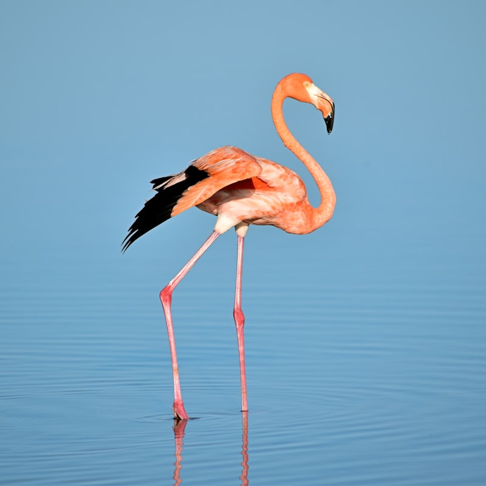

Un peu de faune — flamants roses !

Balade matinale autour des salins de Hyères. On a découvert une colonie de flamants roses à quelques centaines de mètres du mouillage ! Ils étaient une cinquantaine, imperturbables.
Moment magique au lever du soleil, les couleurs étaient incroyables.